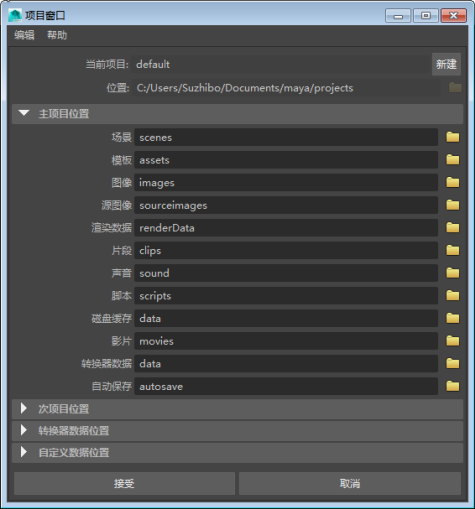

- 若要打开“项目窗口”(Project Window)，请选择“文件 > 项目窗口”(File > Project Window)
通过“项目窗口”(Project Window)，可以创建新 Maya 项目，设置项目文件的位置以及更改现有项目的名称和位置。

- 当前项目(Current Project)
- 显示项目名称。
- 新建(New)
- 单击“新建”(New)创建新项目。
- 位置(Location)
- 显示当前项目的位置。创建新项目时，单击
 浏览图标以导航到项目文件要使用的位置。
浏览图标以导航到项目文件要使用的位置。 - 主项目位置(Primary Project Locations)
- 列出当前的主项目目录。创建新项目时，默认情况下 Maya 会创建这些目录。主项目位置提供重要的项目数据（例如场景文件、纹理文件和渲染的图像文件）的目录。
可以通过选择主项目位置的图标并导航到新位置，来更改主项目位置的默认名称和位置。
- 次项目位置(Secondary Project Locations)
- 列出主项目位置中的子目录。默认情况下，会为与主项目位置相关的文件创建次项目位置。若要更改次项目位置的默认位置，请选择“编辑”(Edit)，然后浏览至新位置。
设置方式(Set up by)
指定是使用默认项目位置（“使用默认值”(Use defaults)）还是自定义（“编辑”(Edit)）次项目位置。
- 使用默认值(Use defaults)
- 将次项目位置还原为默认名称和目录。该选项还可用于转换器数据位置。
- 编辑(Edit)
- 允许您更改次项目位置的名称和目录。该选项还可用于转换器数据位置。
- 转换器数据位置(Translator Data Locations)
- 显示项目转换器数据的位置。
- 自定义数据位置(Custom Data Locations)
- 显示通过单击“添加新文件规则”(Add new file rule)创建的自定义项目位置。自定义数据位置可以包含与已卸载插件关联的文件规则，因为在加载插件之前，可能不知道正确的规则分类。
- 添加新文件规则(Add new file rule)
- 单击“添加新文件规则”(Add new file rule)创建自定义数据位置。
- 接受(Accept)
- 单击“接受”(Accept)创建新的项目，然后保存对现有项目所做的更改。
“编辑”(Edit)菜单
- 重置设置(Reset Settings)
- 将“项目窗口”(Project Window)重置为默认设置。这包括将主位置与次位置的名称和目录还原为默认设置。
- 清除设置(Clear Settings)
- 清除所有的位置名称，将文本字段留空。
- 以易读名称查看(View in Nice Names)
- 以句首字母大写的格式显示次位置名称（例如“3D 绘制纹理”(3D Paint Textures)）。
- 以文件规则查看(View in File Rules)
- 根据 MEL 命名规则显示次位置名称（例如，“3dPaintTextures”）。